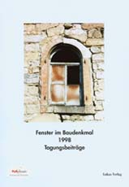

Liebe Leser und Leserinnen der Altbau und Denkmalpflege Informationen,
Sie finden hier (hin und wieder ergänzte/aktualisierte) Auszüge aus meiner Internet-Fragestunde (Achtung: Einige Beiträge stammen aus der Zeit, als ich mich noch mit "Umsonst"-Anfragen herumplacken konnte!) mit leidgeplagten Bauherren, Handwerkern, Kollegen und sonstig Interessierten am erfolgreichen Sanieren. Natürlich ohne jegliche Gewähr und Haftung, allerdings nach bestem Wissen und Gewissen.
Für Bauherren und Baufachleute: Tagesseminare bundesweit
Der kleine Unterschied: Industriegestützte Luxus- und Vernichtungsplanung
Das Handwerkerquiz + Das Planerquiz für schlaue Bauherrn
RA Heinicke: Rechtsinfos und Newsletter
Zur Wahrung der Vertraulichkeit sind die Namen der Anfragenden nur abgekürzt. Produktnamen und manche Konstruktionsratschläge habe ich ebenfalls unkenntlich gemacht, Sie wissen schon warum. Auf Grußformeln wird hier verzichtet, ebenso auf zu persönliche Anmerkungen. Wer selbst anfragen will, soll erst mal hier nachsehen (Tipp: Wortsuchfunktion des Browsers benutzen), ob sein Problem schon dran war. Das spart Zeit und Geld. Objektgerechte Detaillierung und Ergänzung erhalten Sie nur hier, nicht mit irgendeinem Mail oder Anruf.
Inhalt (A-Z):
(Seite nachträglich aufgeteilt und
ergänzt, Pardon für 'ungewöhnliche'
Kapitelfolge)
Einleitung [1]
Anstrich [1] [2]
Architektenvertrag [4]
Ausnahmegenehmigungen/Förderung
Brand- u. Schallschutz
Ausschreibung/Vergabe/Abrechnung/AVA [7]
Bauernhaus-/Baudenkmal-/Hauskauf/Baurecht [5]
Bauernhausstudium [6]
Bauberatung/-fehler allgemein [3]
Externe Bauforen:
(Themenlinks zu Bauschadensforen, Antworten aus der Bauwelt
nach dem Motto: Zwei Berater, 5 Antworten. Try and error!)

"Deutsche Größe
Das ist nicht des Deutschen Größe
Obzusiegen mit dem Schwert,
In das Geisterreich zu dringen,
Vorurteile zu besiegen,
Männlich mit dem Wahn zu kriegen
Das ist seines Eifers wert."
Friedrich von Schiller
Einleitung
Das Baustoff- und Konstruktionsverständnis der Baubeteiligten besteht nicht selten aus schwarzen Löchern. In diese stößt das Vermarktungsgeschick des Baustoffhandels. So nimmt man dessen Umsonstberatung, -begutachtung und -planung bis zu Kostenschätzung und Ausschreibungsentwurf gerne an. Der Bauherr kriegt das natürlich nicht mit. Der Architekt, sowieso nur ein Fassadenstrichler und meistens auf seinen italienischen Landgütern beim Rotweinen, "entwirft" dann den Altbau ebenso weit weg wie der Fachplaner und Handwerksmeister. Dieses stillschweigende "Bündnis für Arbeit" fördert Umsatz und Gewinn aller Beteiligten und wird dem ängstlich-unerfahrenen Bauherrn sogar noch als normgestütztes Expertentum verkauft. Der Bauherr zahlt das ja gerne, gerade als öffentlicher (wobei seine "Vertreter" auch mal gerne die Hand aufhalten...). Die Schadensfälle der modernen Baustoffe und -verfahren treiben dann das Rad der Dauersanierung an.
Bestandserhaltendes Planen und Bauen wäre im Interesse des sparsamen Bauherrn. Geboten werden aber Wunder der Werbung rund um Sanierputz, Maßnahmen gegen aufsteigende Feuchte, Energiesparen durch lufthaltige Schäume, Gespinste, Flocken und Raumabdichtung, Schädlingsbekämpfung, dampfdiffusionsoffene Wasserabweisung und wetterstabile Mineralfarbe. Das kostet sinnlos Bestand und Geld. Der Altbau verdient aber Respekt: technisch, wirtschaftlich und gestalterisch. Seine Mitverwendung - durchaus im Widerspruch zu Neubaunorm und gekünstelter Architekturästhetik - spart Baukosten. Nur das Ganze, der letztüberkommene Zustand mit allen schönen und häßlichen Teilen kann als Informationsträger der vollständigen Geschichte dienen. Geschichtsdokumente und selbst ihre gewohnten Fälschungen sind ja nicht gut oder böse an sich, eine ideologische Bewertung wäre verfehlt. Eine kluger Bauherr fragt gerade bei knapper Kasse: Wie finanziereich die Bauinvestition und organisiere den Betrieb wirtschaftlich und dann: welcher Baubestand ist noch kostensparend wiederverwendbar? Mit was und wie setze ich ihn so instand, daß er möglichst lange hält und mir das Haus nicht vergiftet? (Textfortsetzung...)
Genau zu diesen Fragen wird hier Stellung genommen, wenn Sie wollen, auch für Sie:
Anstrich [1]
J.H. schrieb:
...Jedoch habe ich auch ein Bauthema:
Heute habe ich mit dem Maler gesprochen, der mir letztes Jahr die erste Hälfte der Fassade meines Hauses mit einer acrylhaltigen Farbe (...) - wie ich nach Lektüre Ihrer informativen und überaus unterhaltsamen WebSite sagen muß - zugepammpt hat. Die Farbe blättert jetzt schon - nach circa 6 Monaten - an einigen Stellen ab, darunter ist eine Mineral-Silikat-Farbe von (...). Die Silikatfarbe und der darunter liegende Putz zeitigten schon nach circa fünf Jahren massive Schäden: Wasserblasen unter der Farbe, erste Abplatzungen von Putzschollen - deswegen war die Sanierung letztes Jahr notwendig geworden.
Der Maler kannte zwar Kalksumpfarben und deren Verarbeitung, war sich jedoch sicher, das diese zu Recht heutzutage nicht mehr verwendet werden. Angesichts der Schäden der sechs Monate alten Fassade und der Schäden an der vorherigen Sanierung konnte ich den Maler jedoch erheblich verunsichern, zumal ich ihn ein wenig in die Geheimnisse der feuchten Luft und des kapilaren sowie dampf-gasförmigen Wassertransportes in porigen Baustoffen und Kalkfarben eingeweiht habe (Hätte ich Ihre Website bloß schon letztes Jahr gekannt!).
Der Maler brachte jedoch ein Argument, das ich so nicht wiederlegen konnte: Der saure Regen würde den Kalk in der Kalkfarbe neutralisieren (Aus Kalk wird Gips) und dadurch und in Folge letztendlich zerstören. Hat der Recht, ist das schlimm, gibt es überhaupt noch sauren Regen?
Vermutlich muß die Silikatfarbe mechanisch (Betonschleifer?) entfernt werden, bevor Kalkfarbe aufgetragen werden kann, oder?
Vermutlich stehen die Antworten auf meine Fragen bereits auf Ihrer WebSite, falls nicht, könnten Sie mir bitte eine Antwort geben?
KF: Diesbezüglich bitte ich um Ihr Verständnis, daß ich hier auf mein Beratungsangebot 2berat.htm verweise.
Vorschlag des beauftragten Ingenieur-Büros: die Flächen reinigen und mit einer modernen, angeblich lotusblattähnlich wasserabweisenden und daher algenresistenten Farbe streichen. Und dies, obwohl eine der Brüstungen, die vor ca. 2 Jahren mit eben dieser angepriesenen Wunderfarbe zur Probe gestrichen wurden, heute wieder von Algen befallen ist. Und trotz folgender Tatsache: Vor ca. 5 Jahren wurden auf Grund eines von demselben Ing. Büro erstellten LV die Betonteile der Außenanlage saniert und – ebenfalls gestrichen (s.o.). Kurze Zeit danach wurden überall Risse sichtbar und natürlich breitet sich auch hier massiver Algenbefall aus. Diese Erfahrung bestätigt also eindeutig Ihre dezidierte Meinung zum Thema „Fassadenanstrich“ – soweit ich sie als Laie verstehen kann. Leider aber nützt mir diese Einsicht wenig, da ich als Miteigentümerin einer großen WEG zwar gegen die geplante Maßnahme argumentieren und stimmen kann, vermutlich aber kaum Gehör finden werde, nach dem Motto: Die Autorität, hier also das Ing. Büro, wird schon Recht haben! Was tun?
KF: Falsche Beschlüsse anfechten, "Autoritäten" vor versammelter Mannschaft nach Einflußnahme der Produktherstellerseite befragen: "Wer hat eigentlich das LV gemacht, für das wir Ihnen fettes Planungshonorar geben?"
Sich am Stottern weiden und Miteigentümer aufklären. Meine Lotusseite ausdrucken und verteilen.
Hierzu ist aber von der technischen Seite erstmal folgendes zu wissen:
KF: Da brauchen Sie keine Bedenken zu haben. Das aktuelle Rezept habe ich nun am eigenen Haus an 40 Fenstern im Test. Nach 1 Tag kann der Folgeanstrich drauf. Problem: Wenn der Untergrund mies vorbereitet wurde und nachgeschliffen werden muß, ist die Schleiffähigkeit der Malschicht nach einem Tag noch nicht gegeben. Also: Möglichst perfekter Anschliff schon vor der Streicherei. Und kennen Sie schon XY-Abbeizer? Er erweicht CKW-frei die Kunstharzfarben.
Ein fertig abgemischtes dreiteiliges reines Ölfarbsystem mit der Möglichkeit zur Abmischung nach Wunsch gibt es bei XY.
KF: Nach Rücksprache mit dem Hersteller denke ich, daß eine Kalktünche dafür geeignet sein kann. Kontakt/Beratung: ...
KF: Mit warmem Prilwasser einstreichen, anquellen lassen und dann mit scharfer Spachtel Anstrichschichten abstoßen. Wenn das zu mühsam wird, Dispersionsfarbenabbeizer von XY einsetzen.
Putz abschlagen wäre die radikalste Lösung, das Putzen klappt auch schon ganz gut, aber an der Decke habe ich doch keine rechte Lust dazu.
KF: Das wäre auch sehr unwirtschaftlich.
Ich möchte nicht mehr auf diese Informationsquelle verzichten und werde sie an Kollegen weiterempfehlen!! Ich bin begeistert von Ihrer Seite!!
Stuck im Innenbereich an Decken und Wänden, der über die Jahrzehnte immer wieder mit irgendwelchen Dispersions- bzw.Leimfarben zugeschmiert wurde. Gibt es eine schonende Möglichkeit, die Farbschichten zu entfernen (ohne Schäden anzurichten)?
KF: Am schonendsten geht das wohl mit XY Dispersionsabbeizer.
Der Bauherr ist ein guter Kunde von mir und möchte, daß die Arbeiten an seinem Objekt von meinem Betrieb ausgeführt werden.
"Daneben müssen wir uns in früher Zeit Häuser mit gekalkten Lehmgefachen und mit Kienruß und Standöl schwarz gestrichenem Balkenwerk vorstellen. Ob dabei das Standöl der günstige Anstrich war, ist zu bezweifeln.[...] Einen Nachteil hatte der Anstrich ganz bestimmt: Er war nicht luftdurchlässig, das Holz konnte nicht atmen."
KF: Entscheidend ist, ob eingedrungenes Wasser eingesperrt wird wie bei schichtbildenden Harzfarben oder eben möglichst gut wieder rauskann wie aller Erfahrung nach bei reinen Leinölfarben.
Weiter auf S. 56:
"Ölfarbanstriche an Häusern im Innern des Landes sind kaum bekannt.[...] Die in zurückliegenden Jahren oft gelobten und immer wieder verwendeten Leinöl- und Lackanstriche sollten wir vergessen, zumal diese nicht nur durch ihren speckigen Glanz ein unangenehmes Gefühl hinterlassen. Sie machen alles dicht,
KF: Gilt meiner Erfahrung nach nur für kunst- bzw. naturharzverschnittene, "schichtbildende" Farben. Wer ein bißchen Ahnung hat, weiß, daß sich der Glanz reiner Leinölfarben außen sowieso recht bald als eher seidig-matte Oberfläche zeigt, deren Glanzgrad bestimmt nicht das ästhetische Empfinden eines Durchschnittsbetrachters verletzen wird.
und wir wissen heute mehr über das Atmungsbedürfnis der verbauten Hölzer, und Gott sei Dank hat sich in der Anstrichtechnik eine ganze Menge getan. Es gibt gute, ventilierende Anstrichmittel, die den Anforderungen gerecht werden und nicht hochglänzend dastehen, z.B. auch matte, aber atmende Acrylfarben. Letztere sind hervorragend für den Fensteranstrich geeignet.
KF: Da sind aber nicht alle Malermeister dieser Ansicht. Und wenn man dann die acrylgestrichenen Fenster nach einiger Standzeit bewittert sieht, bemerkt man auch ihre besonders gute Funktion als wirkungsvoller Schmutz- und Staubfänger. Gerade ihre krisselig-matte Oberfläche leistet hierzu besten Vorschub. Außerdem sind die besseren Qualitäten mit gesundheitsschädlichen Lösemitteln versehen und eben keine Wasserlacke. Hantschke/Hantschke: "Farben und Lacke am Bau" stellen die peinliche Frage auf S. 87 so:
"Es stellt sich auch die Frage, was hat den Acryllacken geschadet?
Bei Decklacken:
[...] Es ist ein Trugschluß anzunehmen, das Wasserlacken in der Applikation Feuchte nichts aus macht."
Bei alten Fensteranstrichverfahren war man immer bedacht, gegen die Einwirkung des Wetters von Außen etwas zu tun - auch hier Bleiweiß und Standöl - dabei werden die meisten Außenanstriche von innen her zerstört. Der Diffusionsdruck will nach außen, hebt dichte Anstriche vom tragenden Grund ab und zerstört auch den Fensterkitt. Ventiliernde Anstriche sind dagegen wesentlich weniger anfällig, da durchlässig."
KF: Alles gut und schön, aber wenn sie wie bei Kunstharzfarben häufig den Begriff "ventilierend" nur als Marketingaussage tragen, darf man sich damit nicht ins Bockshorn jagen lassen.
Wenn ich diese Aussagen mit denen auf Ihrer Seite 2oel.htm vergleiche, ist man als Ratsuchender erst mal ratlos.
KF: Diese Aussagen, die der Gründer der IGB, Herr Krafft Ende der 70er im besten Glauben an die damals diesbezüglich auftauchenden Werbeaussagen der Farbindustrie niedergeschrieben hat, klingen heute leider nach einem Vermarktungsversuch für Acrylharzfarben, die recht kritiklos gelobt werden. Ihr Versprödungsverhalten, das Problem der Auftragung als Reparaturanstrich in entsprechend dünner Schichtstärke, das Alterungsverhalten, das Verwittern und das Nachstreichen bei Fehlstellen - informelle Fehlanzeige. Der Text wird auf Nachfrage bei der IGB-Geschäftsstelle als nicht zutreffend angesehen und soll in einer kommenden Neuauflage entfallen bzw. in der Tendenz meiner Ausführungen ersetzt werden. Auch ich habe den raffinierten und leutverblödenden Werbeaussagen früher genug kritiklos Glauben geschenkt, da muß man als Praktiker eben durch.
Die angebliche Luftdichtheit von reinen Ölanstrichen bietet, wenigstens nach meinen Erfahrungen, am Holz technisch so gut wie keine Probleme. Vor allem im Vergleich zu Harzfarben. Am eigenen Haus beäuge ich mit kritischem Blick seit ca. 14 Jahren reine Ölfarben auf 300jährigen und neuzeitlichen Fachwerkbalken, ebenso an einem Holz-Gartenhaus in Freibewitterung mit beschneiten/beregneten horizontalen Flächen. Hier sind bisher keine Bedenklichkeiten zutage getreten, die wenigen - eher mechanisch bedingten Fehlstellen am Gartenhäuschen können durch Beistreichen ergänzt werden - es gibt ja keine Schichtabplatzungen wie bei Kunstharzfarben.
Man kann sich nur wundern, wie uneinheitlich und oft widersprüchlich die Ausführungen selbst derjenigen sind, die sich weitgehend professionell mit dem Thema auseinandersetzen.
KF: Der Autor des "Fachartikels" unter dem IGB-Label hat diese Aussagen vor über 20 Jahren eben nach bestem Wissen und Gewissen getroffen, als altbauinteressierter Privatmann mit hohem denkmalpflegerischem Engagement. Heute wissen alle Fachleute, daß die Hoffnungen in die Ventilation von Kunstharzfarben vergeblich ist, auch bei der IGB.
Das hier angeführte Beispiel zu den Farben ist leider nur eines von vielen. Ganz ähnlich stellt es sich bei unterschiedlichsten Fragestellungen zum Bau dar. Und es verwundert somit letztendlich nicht, daß am Bau soviel falsch gemacht wird, wenn die Widersprüche im Verlauf der Informationseinholung eher deutlich zu- als abnehmen und die Sachlage selbst für den Fachmann schwer zu durchschauen ist. Mit welchen Unsicherheiten der wohlwollende Amateur und Altabaueigentümer belastet(!) wird, kann ich - als vorw. in der Archäologie tätiger und dadurch natürlich auch für die Belange der Baudenkmalpflege stark sensibilisierter - zunehmend nachempfinden. Zum Vorteil für die Bestandserhaltung ist dies sicherlich nicht, eher im Gegenteil. Ich bleibe jedenfalls schon deswegen bei den [Naturfarbhersteller X]-Ölfarben, weil sie angenehm zu verarbeiten sind.
KF: Kennen Sie deren Natur-Harzgehalt? Nur ohne jeglichen Harzanteil entstehen perfekte Ölanstriche. Das Harz beschleunigt die Trocknung, ansonsten ist es ein Versprödungsfaktor erster Ordnung. Wer Zeit hat und die beste technische Qualität sucht, kann und sollte darauf verzichten. Auch das als Lösemittel verwendet Balsamterpentinöl hat so seine Probleme, ist es doch Verursacher der sog. Malerkrätze". Bezugsquellen für fertig abgemischte reine Ölfarben nach Restauratorenrezept und auf Praxiserfahrung begründet können Sie bei mir erfahren: 09574-3011.
Eine Entscheidung also, die sich hauptsächlich auf mein subjektives Empfinden begründet, als auf das aus den dargebotenen Informationen rezipierte "Wissen". Leider.
KF: Nicht aufgeben!
Hmm.. "XY-Wetterfarbe Nr. ...:Anwendungsbereich: Für Holz im Außenbereich, z. B. Fachwerk, Blockbohlen, Blockbalken, Zäune, hinterlüftete Verschalungen, etc.. Nicht für Fenster und Türen.
KF: Einschränkung wegen Neigung zu Verblockung (Ankleben Flügel an Rahmen bei hitzebedingter Erweichung, gerade von Alkydharzfarben und vorschnell geschlossenen Fenstern, gestrichen mit in den Einzelanstrichen nicht vollständig ausgetrockneten/oxidierten Leinölfarben - gerade auch harzverschnittenen, bestens bekannt.)
Eigenschaften: Elastisch, deckend, halbglänzend. Volldeklaration Leinöl-Standöl, Lackleinöl, Leinöl-Holzöl-Standöl, *Leinöl-Standöl-Naturharz-Ester*, Talkum, Mineralpigmente, Isoaliphate, Kreide, dehydriertes Rizinenöl, Orangenschalenöl, Sojalecithin, Kieselerde, bleifreie Trockenstoffe und Zitronenöl. Welche Farbe schlagen Sie vor? Und woher beziehen? Erwünscht ist ein ochsenblutroter Farbton.
KF: Das Rezept der reinen Leinölfarben der Fa. XY entspricht traditioneller Erfahrung und alter Handwerksliteratur.
Tipp zu Ochsenblut: Voranstrich weiß, Deckanstrich mit Englischrot-Pigment. Sieht Spitze rot und nicht kackbraun aus. Habe ich am eigenen Haus (Barockmühle-Fachwerk). Ein derart gestrichenes Fachwerkhaus ist auf 11erhins.htm und english.htm zu sehen.